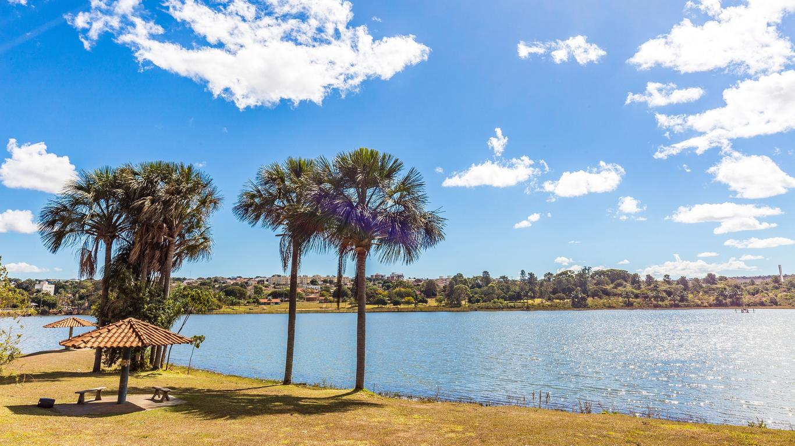
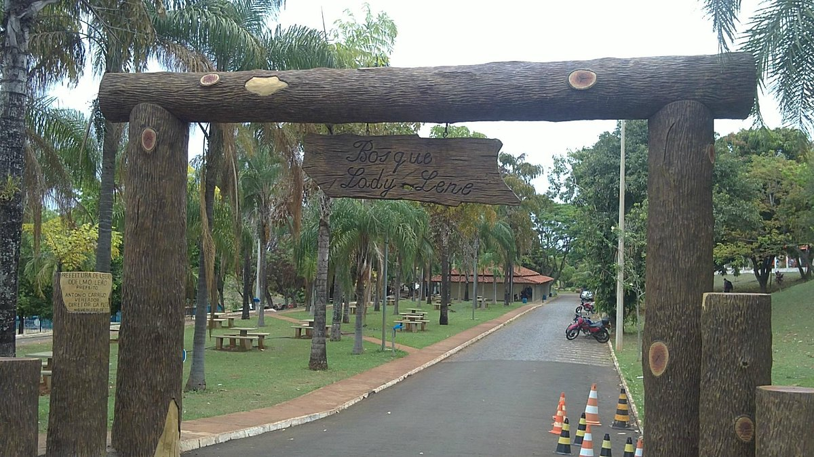

Uberlândia é um município brasileiro do interior do estado de Minas Gerais, Região Sudeste do país. Sua população, segundo estimativas do Instituto Brasileiro de Geografia e Estatística (IBGE), era de 706 597 habitantes em julho de 2021, sendo o município mais populoso da região do Triângulo Mineiro e o segundo de Minas Gerais, sendo o município mais populoso do interior de Minas e o quarto do interior do Brasil.
Parque do Sabia
 Vista aérea do Estádio Municipal Parque do Sabiá
Palco da Seleção Brasileira e de grandes times nacionais.
Museu Municipal
O Museu Municipal de Uberlândia funciona no Palácio dos Leões, um belo edifício construído entre os anos de 1916 e 1917, por Cypriano Del Fávero e tombado pelo Patrimônio Histórico Municipal em 1985. No passado, o prédio abrigou a Prefeitura, a Câmara Municipal e, por um breve período, a biblioteca. Após o seu tombamento, passou a integrar o Complexo da Praça Clarimundo Carneiro, que inclui ainda o Coreto.